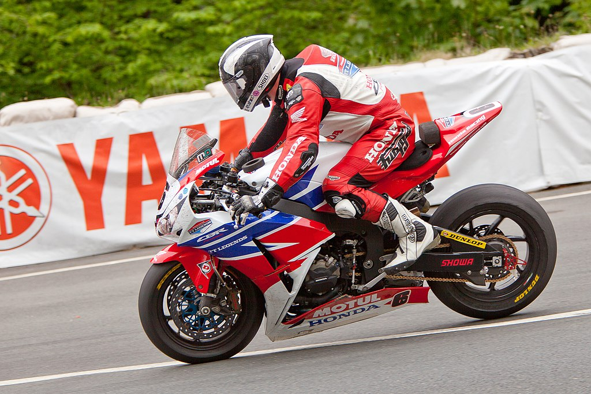

Kampioenen
Een kampioen wordt je nooit zomaar, als kampioen ben je iemand die de limieten van de sport verder duwt en dingen doet die mensen simpelweg niet voor ogen houden. Iedere moto rijder weet wat de Isle of Man TT is en iedereen heeft zeer veel respect voor iedereen dat hier aan meedoet, maar om één van de topmannen van het evenement te zijn? dat vraagt ongelofelijk toewijding aan racen. Een TT winnen kan je enkel met de snelste gemiddelde tijd over heel de race terwijl je rijdt met zo’n 60 tot 100 andere rijders op het circuit. De kampioenen van deze sport waren letterlijk centimeters verwijderd van een fataal ongeluk om hun beste tijden te kunnen zetten.
| Ranking |
Rijder |
TT-Overwinningen |
| 1 |
DUNLOP,Joey |
26 |
| 2 |
MCQUINNESS,John |
23 |
| 3 |
DUNLOP,Michael |
21 |
| 4 |
MOLYNEUX, Dave |
17 |
| 5 |
HUTCHINSON, Ian |
16 |
| 6 |
HAILWOOD, Mike |
14 |
| 7 |
ANSTEY, Bruce |
12 |
De Dunlop dynastie
De familie Dunlp heeft een zowel rijke als tragische geschiedenis. Het begon allemaal met Joey Dunlop, geboren in Noord Ierland zag hij de road races en besloot er zelf aan mee te doen. Niet lang daarna kwam zijn broer Robert Dunlop hem ook versterken in het racen. Beide rijders zijn op tragische wijze omgekomen tijdens races. De twee zonen van Robert Dunlop, Michael en William Dunlop waren al snel enthousiast voor het moto racen. Helaas stopte de tragische traditie van Dunlop ongevallen hier niet. In 2018 verongelukt William Dunlop tijdens een training voor een race in Ierland. hij overleefde deze crash niet. De nu iconische naam Dunlop steunt enkel en alleen op de laatst overlevende Dunlop die nog aan het racen is, Michael Dunlop. Zijn prestaties zijn niets minder dan indrukwekkend met maar liefst 21 overwinningen in de Isle of Man TT.

Phil Long from Manchester, United Kingdom, CC BY 2.0